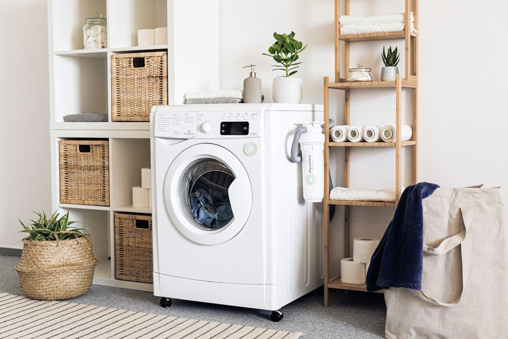
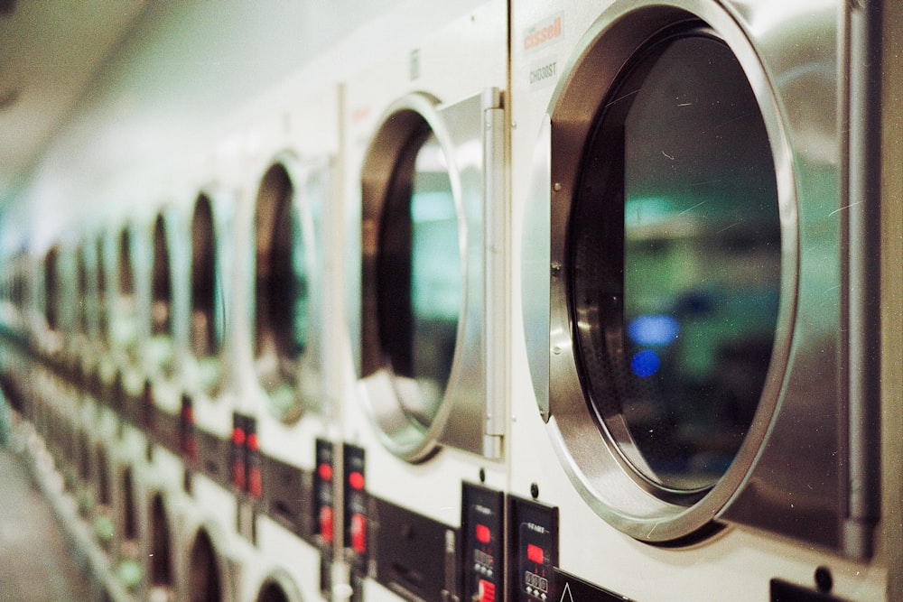

Refrigerator Repair
Troubleshooting cooling failures, frost buildup, noisy evaporator fans, defrost system faults, and faulty ice makers.
When essential kitchen or laundry equipment breaks down, our dedicated technicians provide precise diagnosis, quality replacement components, and dependable service for homeowners throughout San Jose and surrounding Silicon Valley neighborhoods.

Thorough electrical, mechanical, and refrigeration diagnosis tailored to modern home appliances.
Flexible service appointments structured around your household routine and busy schedule.
Full support for refrigerators, dishwashers, clothes washers, dryers, ovens, stoves, and ranges.
Locally focused technicians familiar with residential neighborhoods and homeowner requirements.
Household appliances form the backbone of modern daily routines. When a refrigerator stops cooling, a washing machine refuses to spin, or an oven fails to maintain temperature, prompt attention prevents spoiled groceries, water leaks, and household disruption.
At San Jose Appliances Repair, we focus on identifying the true root cause of appliance malfunctions rather than applying temporary patches. From compressor relay failures in French-door refrigerators to worn drive belts in clothes dryers and faulty circulation pumps in built-in dishwashers, we treat every unit with technical precision.
Whether your residence is situated near Downtown San Jose, Willow Glen, Blossom Hill, West San Jose, or nearby South Bay communities, our phone line is open to discuss symptoms, explain our troubleshooting process, and arrange a visit at your convenience.
We service all major household major kitchen and laundry appliances with care and specialized equipment.
Troubleshooting cooling failures, frost buildup, noisy evaporator fans, defrost system faults, and faulty ice makers.

Resolving water drainage clogs, leak issues, spray arm blockages, door latch defects, and incomplete wash cycles.

Fixing spin cycle failures, excessive vibration, drain pump errors, door seal leaks, and control board issues on front and top-loaders.

Addressing no-heat problems, squeaking drum rollers, snapped drive belts, thermal fuse replacements, and airflow restrictions.

Restoring even baking temperatures, malfunctioning heating elements, igniter issues, broil failures, and oven door hinges.

Solving gas burner clicking, spark electrode failures, electric coil surface element issues, and infinite control switch defects.

Full diagnosis for integrated range units combining cooktop burners and baking chambers with dual fuel or electric hookups.
Repairing deep freezers and upright chest units suffering from warm temperatures, severe frost buildup, or continuous cycling.
Recognizing the symptoms early helps avoid costly damage to food supplies, flooring, and appliance internals.
Condenser coils coated in dust, failed evaporator fan motors, or faulty start relays preventing the compressor from kicking on.
Worn drive belts, defective lid switches, broken motor couplings, or control board errors halting agitation cycles.
Burnt heating elements, tripped high-limit thermal fuses, blown igniters on gas units, or clogged lint exhaust pathways.
Obstructions inside the drain impeller, pinched drain hoses, failing drain solenoid valves, or food residue accumulation.
Failed bake element with visible blistering, weak gas spark igniters failing to open safety valves, or calibration drift.
Continuous clicking spark igniters, blocked burner orifices, loose electrical harness plugs, or broken radiant surface switches.
Touch display error codes, unresponsive control knobs, or faulty clock timers causing erratic cooking cycles.
Worn door perimeter magnetic gaskets letting humid air enter, or a defective defrost heater/bimetal thermostat failing to melt ice.
We combine honest technical evaluation with practical respect for your household.
We explain findings in straightforward language so you understand the fault before any work begins.
We test individual circuits, sensors, and mechanical assemblies systematically rather than guessing.
Scheduled arrival windows that respect your family time, with prompt call updates if traffic occurs.
Precision installation of parts, protective floor mats, and thorough testing of the appliance post-repair.
Four easy steps from your initial phone call to a fully restored home appliance.
Call our San Jose service desk at (833) 327-1076 or send an inquiry with your appliance model details.
Share what symptoms you are experiencing, such as error codes, unusual noises, leaks, or cooling issues.
Pick a service appointment that accommodates your routine, and receive confirmation of your technician window.
Our technician inspects the system, provides a detailed diagnostic report, and executes the repair with care.

Modern residential appliances feature microprocessors, inverter compressors, multi-valve water inlets, and complex sensor arrays. Attempting DIY repairs without the proper diagnostic meters often leads to accidental component burnout or voided equipment warranties.
Serving homeowners across San Jose and adjacent communities throughout the South Bay region.

Full appliance repair coverage including Downtown, Willow Glen, West San Jose, Almaden Valley, and Silver Creek.

Reliable kitchen and laundry repair for homes, condos, and apartments across Santa Clara.

Prompt service appointments for homeowners needing refrigerator, washer, dryer, or oven care.

Dedicated home appliance repair assistance for Cupertino residents and surrounding South Bay neighborhoods.
Straightforward answers regarding our appliance repair services, scheduling, and diagnostic approach.
We service all standard major residential kitchen and laundry appliances, including refrigerators, freezers, dishwashers, clothes washing machines, dryers, cooking ovens, stoves, and ranges.
Yes. Refrigerator cooling loss is one of the most frequent issues we handle. We diagnose evaporator fan motors, start relays, defrost heaters, thermostats, and compressor electrical components to identify the cause.
Yes. If your washer refuses to spin or agitate, our technicians test the lid/door latch switch, drive belt, motor coupler, and drain pump assembly to get the wash cycles completing smoothly again.
If the drum tumbles but clothes remain damp and cold, common culprits include an open thermal fuse, burned heating element coil, or failed gas igniter. Call us at (833) 327-1076 to schedule a diagnostic visit.
Standing water in the bottom of your dishwasher typically indicates a blocked drain filter, clogged check valve, failed drain solenoid, or foreign debris inside the pump impeller. We dismantle and clear the drain tract safely.
We work on freestanding ranges, slide-in units, wall-mounted ovens, gas cooktops, and electric smooth-top stoves across major appliance configurations.
You can directly call our phone line at (833) 327-1076 to speak with our dispatch desk, or submit your information through our online contact form to receive a prompt follow-up.